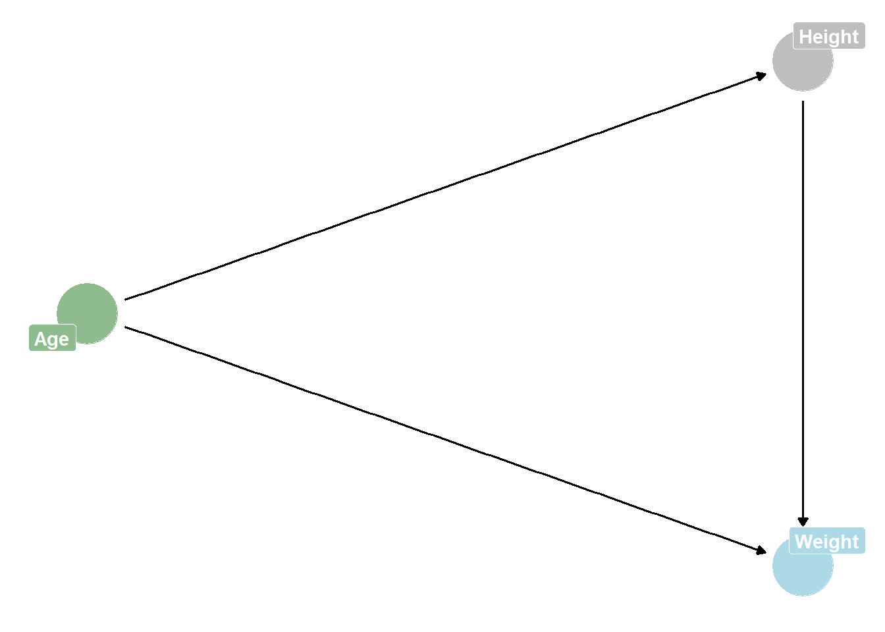

dagified <- dagify(
# outline relationships between your variables
Weight ~ Age + Height,
Height ~ Age,
# assign exposure and outcome
exposure = 'Age',
outcome = 'Weight',
# assign coordinates so they aren't randomly assigned
coords = list(x = c(Age = -1, Height = 0, Weight = 0),
y = c(Age = 0, Height = 1, Weight = -1))) %>%
# tidy_dagitty makes dag into tidy table format
tidy_dagitty() %>%
# add column that assigns variables to groups that you want to colour code
mutate(status = case_when(name == "Age" ~ 'exposure',
name == "Weight" ~ 'outcome',
.default = 'NA'))
ggplot(dagified, aes(x = x, y = y, xend = xend, yend = yend)) +
theme_dag() +
# colour nodes by the column you made in previous step
geom_dag_point(aes(color = status)) +
# add labels so you can have more readable variable names
geom_dag_label_repel(aes(label = name, fill = status),
color = "white", fontface = "bold") +
# adding geom_dag_edges here so that the arrows will go over the labels
geom_dag_edges() +
# assign the colours that you want
scale_fill_manual(values = c('darkseagreen', 'grey', 'lightblue')) +
scale_colour_manual(values = c('darkseagreen', 'grey', 'lightblue')) +
# removing colour legend here
theme(legend.position = 'none')